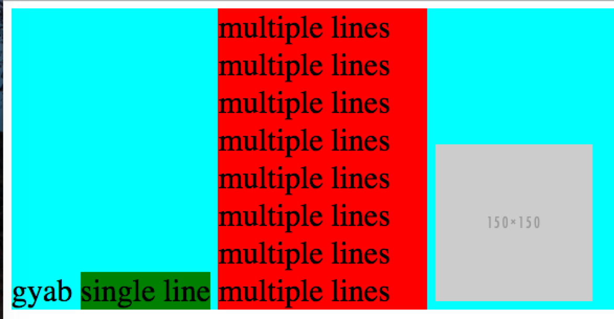

要理解vertical-align的工作原理, 首先要搞清楚以下两点:
vertical-align在inline-level元素和table-cel元素上所起的作用是迥异的(后面我们会分开来讨论这两个)
inline-level elements
vertical-align的合法属性值如下:
baseline(默认值), middle, sub, super, text-top, text-bottom,
vertical-align对于inline-level元素是控制自身的对齐方式的, 我们这里只介绍下大家经常用的middle, 直接上例子

这里'single line'元素的排列位置是不是和之前一篇介绍的现象很像, 我们说过可以通过vertical-align: top还让它与父元素的顶端对齐, 现在我们想让它在父元素内居中放置, 那是不是vertical-align: middle就搞定了? (too young, too simple..), 加上了middle的'single line'元素往下移了大概0.5em的高度, why?
看下middle的定义:
Align the vertical midpoint of the box with the baseline of the parent box plus half the x-height of the parent.
middle只能做到让当前盒的中间点与父元素的baseline对齐, 本来是自身的baseline与父元素对齐, 现在改成中间点, 那向下移0.5em的现象也就不难解释了. 现在问题又来了我们怎么通过vertical-align让'single line'元素垂直居中呢. 答案是在'multiple line'元素上加'vertical-align: middle'. 置于原因, 可以自己脑洞下呢
另外对于像img这种元素, 对齐是相对于它的margin box来说的哦.
table-cell elements
vertical-align对于table-cell元素是控制内部元素的对齐方式的(不知道怎么想的, 两个完全不两只的表现都用一个属性, 也难怪大家总是分不清楚用法了)
直接上代码呢.
这里可以看到vertical-align对table-cell元素来说是用来控制它内部元素的对齐(而不是它自身), 另外这里'haha'块的对齐是不可以用margin: 0 auto;的哦. 原因的话我们后面介绍, table布局的时候再介绍下呢.